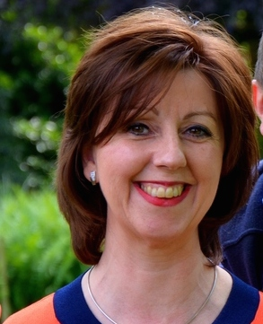
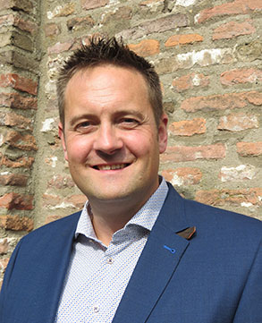
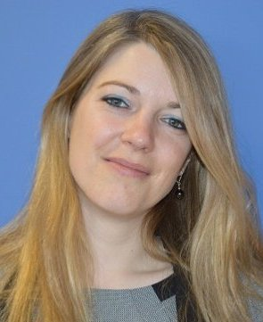

INEZ VERMEULEN
As the Founder and CEO of Reliant-HR-Solutions, he has more than 25 years of successfull corporate and entrepreneurial experience in a number of global industries ranging from retail, FMCG, financial services, and medical devices in Germany, Belgium, UK, Italy and the Netherlands. Throughout her business career, Inez has helped grow and expand the divisions of global companies such as Coca-Cola Company, Regus, DHL, American Medical Systems, ect She received a number of company awards for her enterpreneurial spirit and success. Inez international HR and Business knowledge and expertise comes from first-hand experience, having been involved and responsible for double digit growth figures, maximizing performance & talent, start ups, expansions & acquisitions. Inez owns a Bachelor’s degree in French, History and Latin, several HR global expert certifications, a Master’s degree in Metaphysical Sciences, ICF Coach Certification and has finalized her Doctorate on Transformational Leadership. Inez works in partnership with an extensive international network of independant & professional companies.
ALWIN VAN DONGEN
Alwin van Dongen is an international HR and Payroll consultant. He has more dan 20 years of experience in Payroll and related disciplines. The expertise of Alwin is mainly focused on International Payroll, HR administration and processes, employment conditions, social security and wage taxes. He has followed various education, courses and trainingen in this area. In the past he worked as a Payroll Manager, HR Project Manager or HR Shared Service Center Manager for PricewaterhouseCoopers, ADP Netherlands and several other international companies such as for example Bilfinger Industrial Services. In 2013 he decided to work as a self employed specialist/consultant. In the meanwhile he has succesfully completed various assignments for international companies as an International Payroll coordinator, Consultant and Project manager. Alwin speaks fluently English and a understands German. Since 2014 he managed and coordinated several (Inter)national Payroll administration for Europe HR Solutions.
KARINE HAUBEN-JULIEN
Karine Hauben-Julien is a seasoned International Human Resources Manager, who decided after 15 years of successful international work experience in corporate environments to start working as an international HR Consultant. She worked in different industries such as the medical devices, automotive and travel industry. Karine owns a bachelor’s degree in Marketing, several HR certifications and is a self-made Human Resources professional. Her knowledge comes from first-hand experience, having throughout her career been involved in and responsible of many projects such as international start-ups, mergers and acquisitions, reorganization’s, compensation & benefits, talent & performance , international recruitment, policies & procedures for many different European countries. Due to extensive travel throughout her career, Karine has become passionate and learned a lot about different cultures all over the world. She speaks fluently Dutch, French and English. Karine resides in Belgium, nearby Brussels and also works on a global level.